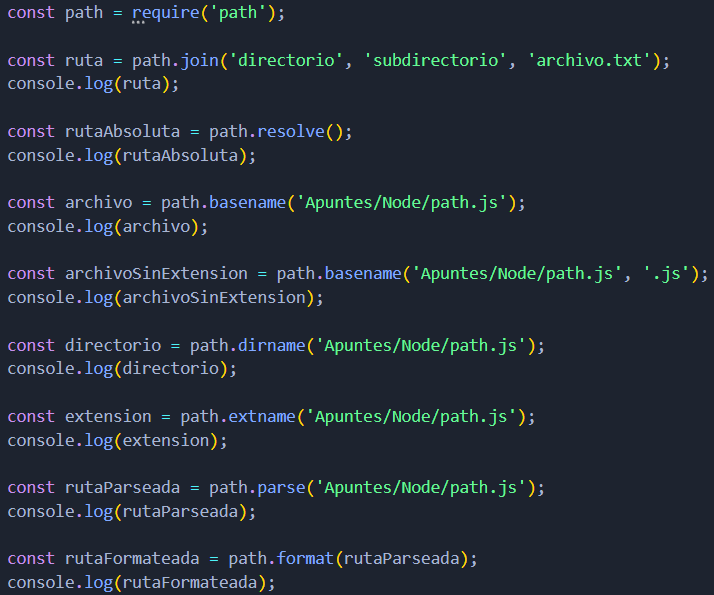
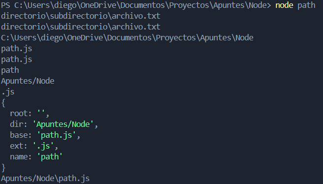

Métodos
Algunos de los métodos más comunes del módulo path son:
- path.join():
- Esta función une segmentos de ruta en una sola ruta, manejando automáticamente los separadores de directorios. Es útil para crear rutas de manera segura.
- path.resolve():
- resuelve una secuencia de segmentos de ruta en una ruta absoluta. Parte desde el directorio actual a menos que se pase una ruta absoluta como argumento.
- path.basename():
- Devuelve el último segmento de una ruta, que usualmente es el nombre del archivo. Si se agrega un segundo argumento, el método devuelve el nombre del archivo sin la extensión.
- path.dirname():
- Devuelve la parte de la ruta que corresponde al directorio, excluyendo el archivo o el último segmento.
- path.extname()
- Devuelve la extensión de un archivo.
- path.parse():
- Convierte una ruta en un objeto con las siguientes propiedades: root, dir, base, ext, y name.
- path.format():
- Toma un objeto con las propiedades mencionadas y construye una ruta.
- path.normalize():
- Normaliza una ruta, resolviendo .. y . automáticamente. También convierte múltiples separadores consecutivos en uno solo.
Ejemplo:
